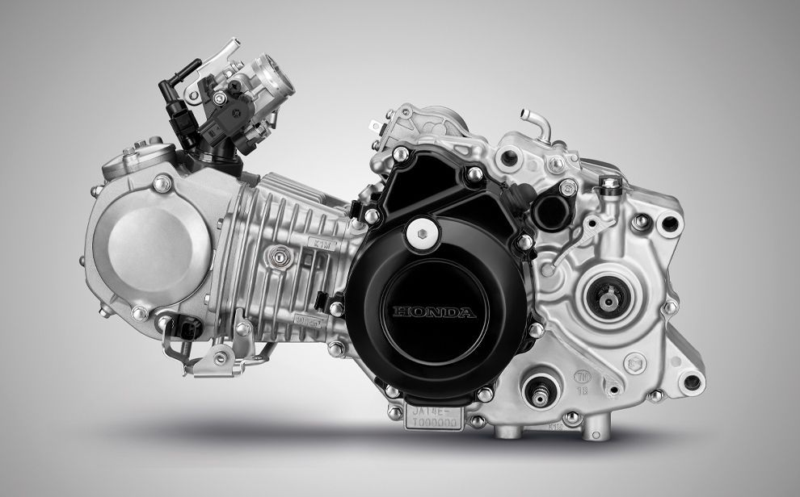

ระบบระบายความร้อนด้วยอากาศ
หลักการทำงานระบบระบายความร้อนด้วยอากาศ
1.การถ่ายเทความร้อน :
อากาศที่กระทบกับเครื่องยนต์ขณะรถเคลื่อนที่ จะดูดซับความร้อนจากเครื่องยนต์
2.ครีบระบายความร้อน :
ตัวเครื่องยนต์จะมีครีบโลหะติดอยู่ด้านนอก เพื่อเพิ่มพื้นที่ผิวสัมผัสกับอากาศ
ทำให้การระบายความร้อนมีประสิทธิภาพมากขึ้น
3.ลมธรรมชาติหรือลมบังคับ :
บางครั้งอาจมีพัดลมช่วยบังคับอากาศให้ไหลผ่านครีบระบายความร้อน
เพื่อให้การระบายความร้อนดีขึ้นในบางสถานการณ์
ข้อดี
1.ลมธรรมชาติหรือลมบังคับ :
บางครั้งอาจมีพัดลมช่วยบังคับอากาศให้ไหลผ่านครีบระบายความร้อน
เพื่อให้การระบายความร้อนดีขึ้นในบางสถานการณ์
2.ต้นทุนต่ำ :
รถที่ใช้ระบบนี้มักมีราคาไม่สูง และมีค่าใช้จ่ายในการบำรุงรักษาต่ำกว่า
3.ความทนทาน :
เครื่องยนต์มีความทนทานและไม่น็อคง่ายหากดูแลรักษาอย่างเหมาะสม
ข้อเสีย
1.ควบคุมอุณหภูมิได้ยาก :
อุณหภูมิเครื่องยนต์จะแปรผันตามสภาพอากาศภายนอก และการจราจร
2.ความร้อนสะสม :
ความร้อนจากเครื่องยนต์จะสะสมได้ง่ายกว่าระบบที่ใช้ของเหลว
3.การระบายความร้อนจำกัด :
อาจมีประสิทธิภาพลดลงเมื่อต้องขับขี่ในสภาวะการจราจรติดขัด หรืออากาศร้อนจัด
การดูแลรักษา
1.รักษาความสะอาดครีบ :
ควรทำความสะอาดครีบระบายความร้อนอยู่เสมอ เพื่อไม่ให้ฝุ่น ดิน ทราย หรือสิ่งสกปรกอุดตัน
ซึ่งจะขัดขวางการไหลของอากาศและลดประสิทธิภาพในการระบายความร้อน
2.ตรวจสอบน้ำมันเครื่อง :
น้ำมันเครื่องมีส่วนช่วยลดความร้อนในเครื่องยนต์ จึงควรเปลี่ยนถ่ายน้ำมันเครื่องตามระยะเวลาที่กำหนด